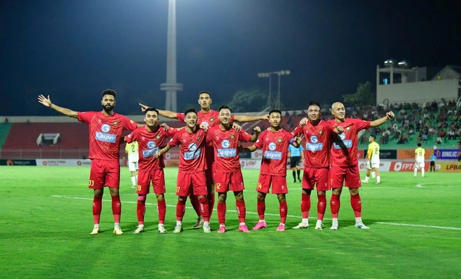

V.League
The top position in the silence of the most 'talkative' person in V-League: Coach Popov

Thanh Hoa FC is leading the V-League. Right behind them is The Cong Viettel, teams that have suffered a lot in recent times. What they have in common is that they climbed to the top positions quietly.
Rarely in the V-League season in recent years, Thanh Hoa Football Club coach Velizar Popov has been so quiet. This season, the Bulgarian coach rarely reacts to referees, nor does he spend too much time criticizing the playing style of his opponents, as he did in previous seasons. In the past few seasons, Mr. Popov has been famous for his strong personality, and is the most argumentative in the V-League.
Thanh Hoa did not start the 2024-2025 V-League smoothly, losing 1-2 to championship candidate Binh Duong in the first round, right at home. However, even after the above loss, coach Popov did not make a fuss. He quietly worked with his students to rebuild, before the entire Thanh Hoa team almost transformed in the following rounds.
Also after losing to Binh Duong in round 1, Thanh Hoa returned to their "cup king" nature. They no longer played aggressively in the following matches, but were extremely dangerous when playing counter-attacks, were solid in the backline and lightning-fast when bringing the ball to the opponent's field.
The proof is that from round 2 to round 5, Thanh Hoa has never conceded more than 1 goal/match. They had 2 away wins (1-0 against Hanoi Police Club in round 2 and 4-1 against Binh Dinh in round 4). Those were all matches where the opponents of the Thanh team attacked more than them, but the efficiency was not as good as the team under coach Popov.
As mentioned, this season Thanh Hoa does not have too many new stars added, their force is not strong enough to be ranked in the group of bright championship candidates. But it is no coincidence that Thanh Hoa team won the National Cup twice in a row in the last two seasons. They still have an annoying playing style and defeating Thanh Hoa Club is never easy.